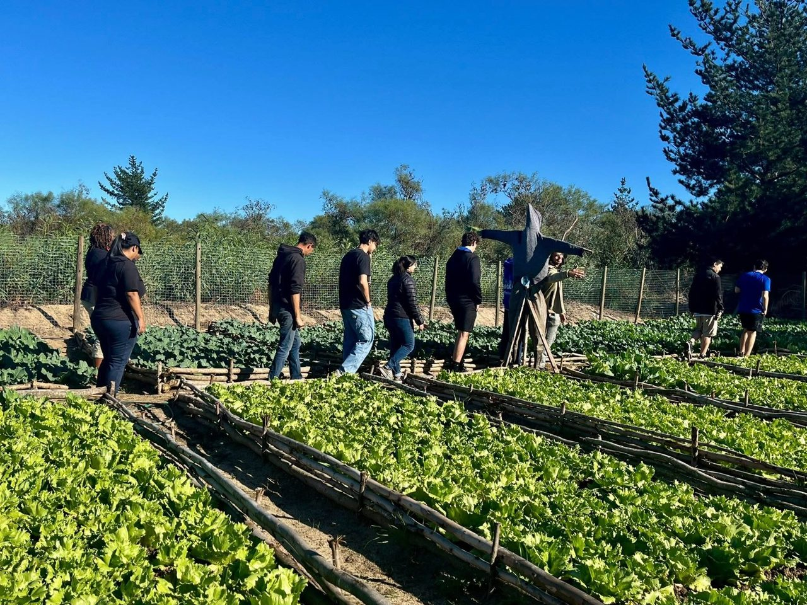

Capacity Building & Theatre Training
Confidence, communication and creativity through the performing arts and capacity-building.
Elsies River · Cape Town · South Africa
Safe Cities is a non-profit organization equipping people with practical skills, sustainable agriculture, and leadership opportunities to build resilient, self-sustaining communities.
Who we are
Safe Cities is a Non-Profit Organization based in Elsies River. We focus on Social Development and Skills Training: Capacity Building & Theatre Training, Construction Skills Training, Permaculture Skills Training, the Young Leaders Initiative, and the Wellness & Women Empowerment Program.
Vision & mission
Our vision is to ensure that individuals are trained and equipped through our programmes, better preparing them for an evolving society.
We focus on leadership training, self-sustainability and community upliftment, believing in empowering and educating youth, women, men and children.

What we do
Practical, hands-on training that turns skills into livelihoods and neighbours into leaders.
Confidence, communication and creativity through the performing arts and capacity-building.
Building trade skills that open doors to employment and help members shape their own surroundings.
Growing food and self-sustainability: permaculture gardens that feed families and restore the land.
Nurturing the next generation of leaders with mentorship, responsibility and a voice in their community.
Health, dignity and opportunity: supporting women to thrive and lead within their families and beyond.
Sharing our story through an active social media presence and a weekly podcast. Follow us on Instagram @perma_culture_skills_training.
Explore
Volunteer, partner or learn more about our work in Elsies River.